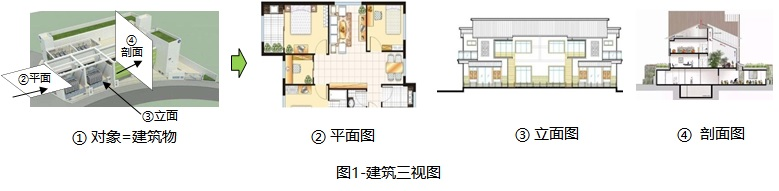
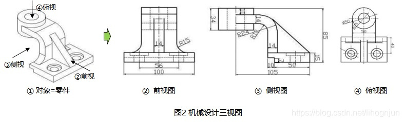
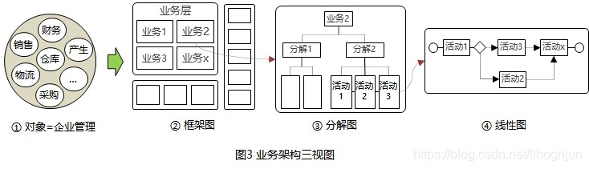
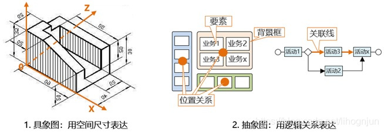

业务架构图¶
架构设计、功能设计``和``数据设计，是软件设计过程中三个不同层次的设计工作。其中``业务架构的设计``又是系统整体规划中最重要的基础工作，后续所有的设计和开发等工作都是基于对业务架构的展开，从业务架构的设计成果中可以获得业务逻辑、功能需求、数据关系等重要信息，表达业务架构的主要方法就是使用业务架构图。
Note
表达准确的业务架构图，应该不用说明（或少许的介绍），观者就可以自己从图上读出你要传递的意图、逻辑。
定义:
在非软件行业中（如制造业、建筑业务等）
设计意图传递、加工制造的依据等都是设计图纸
在业务架构初期，将模糊的需求描述转变成清晰的问题域，梳理出清晰的业务流程，为之后的架构做基础。
既可以通过图看出要实现那些业务，又能通过分层，包含等图形表示看出业务之间的关系。
意义:
看清楚系统包含哪几个部分，各部分的职责，相互之间的关系。
很容易确认问题所在的业务模块，可以让相关人员快速了解业务。
建筑行业¶
在建筑行业，设计师使用最多的就是三种基本图形，称之为 “建筑三视图”。
以①的建筑物（三维图）为例，三个基本图形分别为：平面图、立面图、剖面图。通常看到了这三种图形后，观者大体上就可以理解建筑的基本构成了。

建筑三视图的说明如下:
②平面图：
它是对①建筑物从某个高度 “沿水平面一刀”，露出横断面，然后从鸟瞰的视角从上向下看，
表达的是建筑平面形状、内部布局、与周边的关系等（有买房或租房经验的人一定都看过此图）。
③立面图：
它是站在①建筑物的对面看，表达的是建筑的外立面形状。
④剖面图：
它是将①建筑物的某个位置上 “纵向切一刀”，去掉后一半后，观看剩下的另一半的内部情况，
它表达的是建筑物的内部各层之间的关系。
制造行业¶
在机械制造行业，设计师使用的最多是三种基本图形，称之为 “机械三视图”。
以①的机械零件（三维图）为例，三个基本图形分别为：前视图、侧视图、俯视图，通常看到了这三种图形后，观者大体上就可以理解零件的基本构成了。

机械三视图的说明如下:
②前视图：
它是对着①，从②的角度（前视）看零件；
③侧视图：
它是对着①，从③的角度（侧视）看零件；
④俯视图：
它是对着①，从④的角度（俯视）看零件；
软件行业¶
软件行业业务架构也有类似的三视图，即：框架图、分解图``和``流程图，它们可以称之为 “业务架构三视图”，通常看到了这三种图形后，观者大体上就可以理解业务的基本构成了

业务架构三视图说明如下:
②框架图：
表达了对图①内容的体规划、范围、分区、区域之间的关系；
③分解图：
表达了对图②中的某个区域内容的静态分解关系；
④流程图：
表达了对图③中的某些活动之间的流程关系；
模型特点分析¶
特征的差异¶
不论是哪一个行业的设计图，选取研究对象最具特征的视角、维度
使用最少的图形就可以将对象的基本情况表达出来
这个对研究对象特征的提炼非常重要。

建筑 / 机械图:
从三维空间（X、Y、D）的视角，用尺寸给出了对象的特征表达；
描绘的是具象的、直观的、可触摸的物体，有物理的原理、空间尺寸等的约束，
判断正确与否的依据是原理、尺寸关系等；
业务架构图:
从静态（框架、分解）、动态（流程）的视角，用要素之间的关联关系（箭头、位置、包含）给出了特征表达；
描绘的是抽象的 “事物”，不可触摸、不直观，
判断正确与否的依据是业务事理、逻辑关系、规则约束等；
绘图目的差异¶
建筑 / 机械图:
用高仿真的方式，画出与未来制造完成后完全一致的对象结构；
业务架构图:
用逻辑模型给企业的业务 “画像”，让看不见的企业管理对象（如：营销管理、物流管理、经费报销等）可以变得能 “看见”；
结论¶
建筑 / 机械图:
表达对象的空间尺寸图；
业务架构图:
表达对象的逻辑关系图；
业务组和技术组之间相互抱怨，都说对方听不懂自己的意思:
同样在软件工程师和客户之间也会经常发生需求误解的现象
造成这个问题的原因有很多，但最为重要的还是大家没有一个:
“共同语言”
每一方都在用只有自己熟悉的方式说明问题，如:
客户用客户的行业用语、
软件工程师用 IT 的用语（UML 等）
因为两者的用语都不能作为 “共同语言”，所以无法精准地进行意图沟通和传递。
建筑行业、机械行业就不存在这个问题，因为:
他们有 “共同语言 = 图纸”。
业务架构图也可以起到 “共同语言” 的作用
它的表达载体是符合 “IT 技术要求” 的逻辑图，但表达的是客户的 “行业业务”
因此，就实现了让软件的相关人（客户、业务、技术）三者都可以理解，并可以作为沟通、交流、设计和验收的依据。
如何绘制业务架构图(李鸿君): https://blog.csdn.net/lihognjun/article/details/110732496